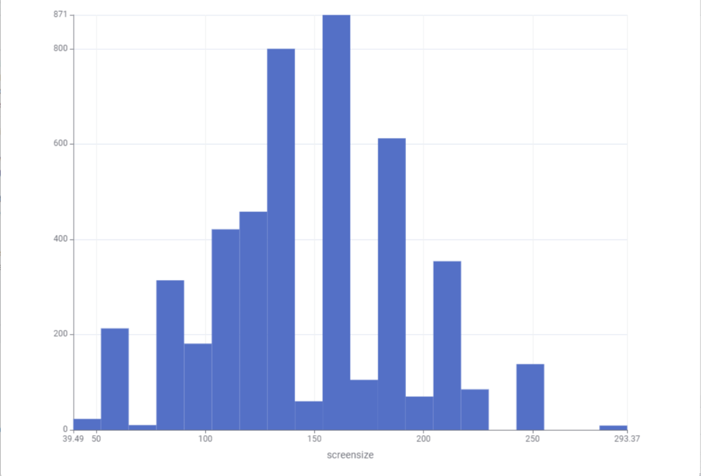

Storyboards
Storyboard 1: How frequent is each size of Television
Visualisation

Histogram showing the frequency of different television screen sizes
Issue/Question
How frequent is each size of TV in the Australian TV market?
Describe
The distribution of television screen sizes in the dataset is shown by the histogram. We can see which sizes are more common and which are less common by grouping the screen sizes into ranges.
Demonstrate
A histogram is used to show the frequency of different television screen sizes. Each bar represents a range of screen sizes and the height of the bar represents how many TVs fall within that range.
Key Finding
The distribution shows that some television screen sizes are much more common than others. Most TVs are concentrated within commonly available screen size ranges, while some smaller and larger sizes occur less frequently.
Recommendation
Consumers can use the distribution of screen sizes to understand which TV sizes are commonly available when choosing a television
Storyboard 2: How does screen size impact Energy consumption?
Visualisation

Bar chart somparing average labelled energy consumption across different TV screen sizes (Small, Medium, Large).
Issue/Question
How does television screen size affect energy consumption?
Describe
The bar chart compares the average annual energy consumption (in kWh/year) across three categories of screen sizes: Small, Medium, and Large. Each bar represents the average consumption for that category.
Demonstrate
A bar chart is used to clearly show differences in energy consumption between screen sizes. The height of each bar indicates the average labelled energy usage for that category.
Key Finding
Larger screens consume significantly more energy (around 740 kWh/year) compared to medium screens (around 400 kWh/year) and small screens (around 150 kWh/year). This highlights a strong correlation between screen size and energy usage.
Recommendation
Consumers should consider both screen size and energy efficiency when purchasing a television. Smaller or medium-sized screens may offer significant energy savings compared to larger models.